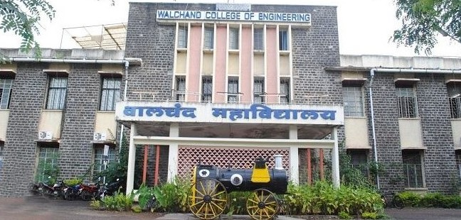
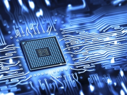

Walchand College Of Engineering, Sangli
Vishrambagh, Sangli
Department Of Electronics Engineering

About Us
Due to the increasing demand of graduate engineers specialized in the fields of Electronics and Computer Science in mid 80’s; the institute established this department in 1986. The department was then named as "Department of Electronics and Computer Engineering". The classes for both courses, leading to degree in Electronics Engineering and degree in Computer Engineering, were handled by this department till 1993, the year in which the department of Computer Science and Engineering was bifurcated. Since then department is named as "Department of Electronics Engineering". The department offers
four-year degree course in Electronics Engineering and is affiliated to Shivaji University, Kolhapur. Admission to this course, with an allowed intake of 60 students, is based on their performance at the higher secondary school certificate (HSC) examination conducted by the HSC Board, Maharashtra State.